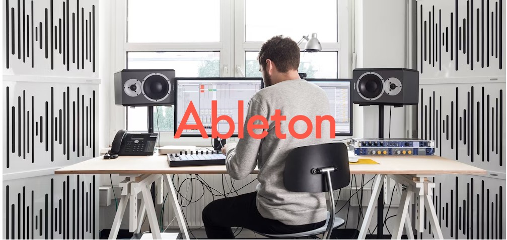
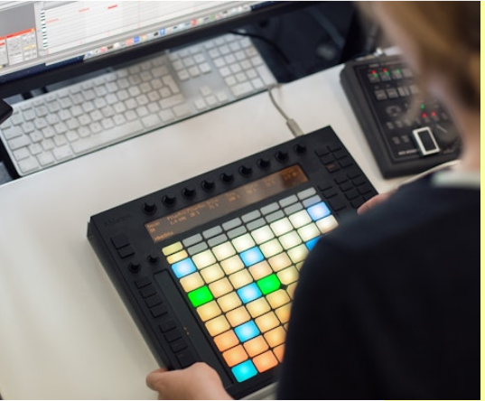
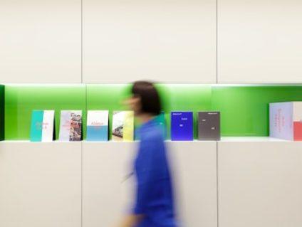
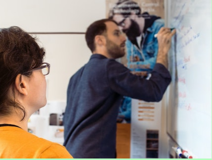
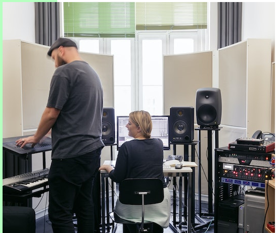
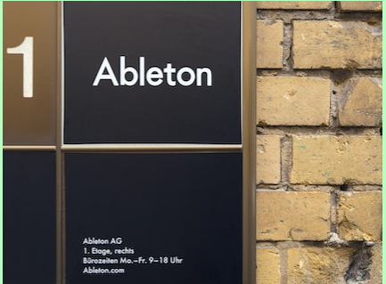
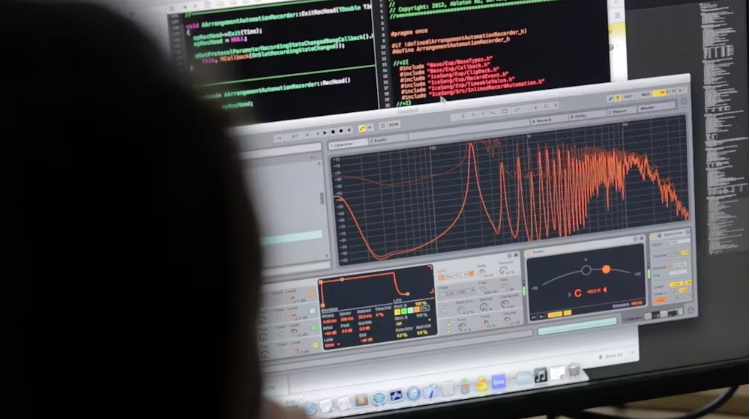
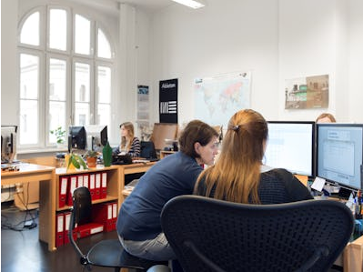
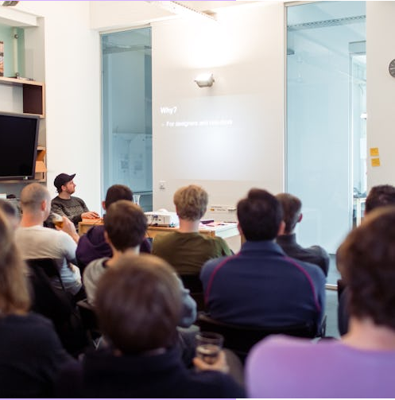
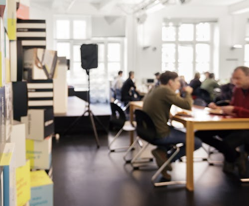

About
Jobs
Apprenticeships

We make Live, Push and Link — unique software and
hardware for music creation and performance.With
these products, our community of users creates
amazing things.
Ableton was founded in 1999 and released the first version of Live in 2001. Our
products are used by a community of dedicated musicians, sound designers, and
artists from across the world.


Making music isn't easy. It takes time, effort, and
learning. But when you're in the flow, it's incredibly
rewarding.
We feel the same way about making Ableton products. The driving force behind
Ableton is our passion for what we make, and the people we make it for.

We are more than 350 people from 30 different
countries divided between our headquarters in Berlin
and our offices in Los Angeles and Tokyo.
Most of us are active musicians, producers, and DJs, and many of us use Live and
Push every day. We come from a wide range of cultural and professional
backgrounds. Some of us have PhDs, some are self-taught, and most of us are
somewhere in between. What connects us is the shared belief that each of us has
the skills and knowledge to contribute to something big: helping to shape the future
of music culture.



We believe it takes focus to create truly outstanding
instruments. We only work on a few products and we
strive to make them great.
Rather than having a one-size-fits-all process, we try to give our people what they
need to work their magic and grow. We've learned that achieving the best results
comes from building teams that are richly diverse, and thus able to explore
problems from a wider set of perspectives. We don't always agree with each other,
but opinion and debate are valued and openly encouraged.

We're passionate about what we do, but we're
equally passionate about improving who we are.
We work hard to foster an environment where people can grow both personally
and professionally, and we strive to create a wealth of opportunities to learn from
and with each other.
Alongside an internal training program, employees are actively supported in
acquiring new knowledge and skills, and coached on applying these in their daily
work. In addition, staff-organized development and music salons are a chance to
discuss new technologies, production techniques and best practices.


We want our employees to love it here. Since we’re
looking for exceptional talent from around the world,
we will do everything we can to make your transition
as easy as possible.
If you're joining us in Berlin, we'll help with relocation and paperwork. We'll even
provide you with free German or English lessons. Plus, working in Germany means
you can expect comprehensive health insurance for you and your family, as well
as generous maternity and paternity leave. Office hours are flexible, but it's not all
work; we have several company and team outings throughout the year as well as a
variety of fun, informal small-group activities.
We’re really proud of the
work we’ve done so far.
But there’s so much more
to come. If you’d like to be
a part of it, please join us.
See latest jobs
